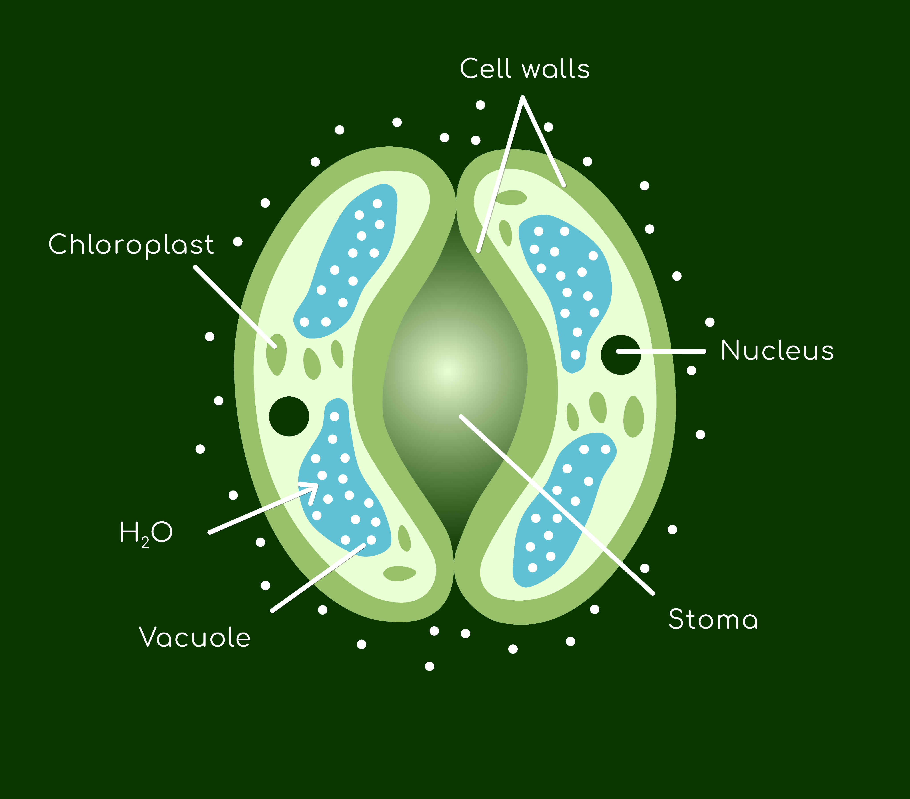
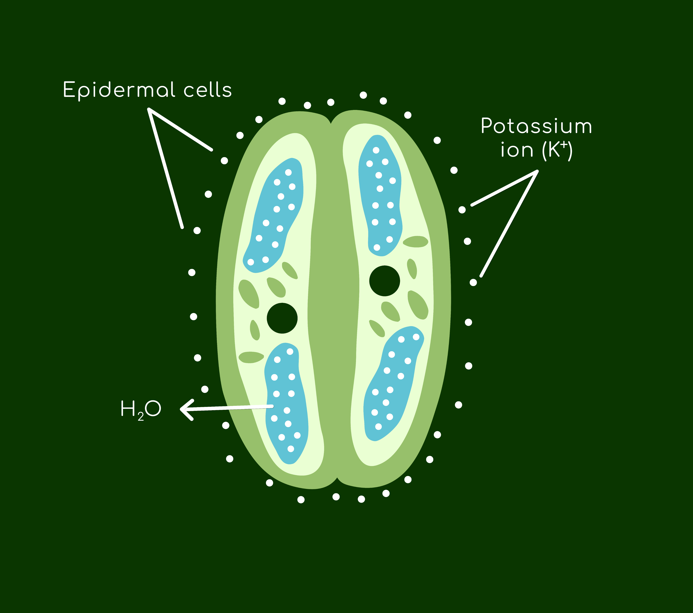

WHY SHOULD FARMERS USE VITACALCITE
VitaCALCITE plant booster contains fine micronized calcium particles. This form of microbial calcium is equipped with enhanced biological activity yielding greater efficiency in supporting crop development via:
Enhanced nutrient uptake: Micronized calcium is more readily absorbed by crops than traditional forms of calcium. This is conducive to healthy growth as the small particle size allows them to penetrate deeper into the plant stomata, providing better nutrient coverage and distribution.
-
Stronger cell walls: With access to micronized calcium, plants can build stronger cell walls protecting themselves from pests, diseases, and climate stresses. And because calcium plays such a pivotal role in plant growth and development, its deficiencies manifest in stunted growth and reduced yields.
-
Healthy roots: When micronized calcium is sprayed to your crops, not only does it promote photosynthesis and nutrient supply, but it also improves the soil structure and root system development, thus increasing water and nutrient availability via plants’ system of capillary roots.
-
Improved fruit properties: Micronized calcium improves the quality of fruits and vegetables. This includes making them more flavorful, nutritious, firmer, uniform, and resistant to spoilage.
Guard cells
(swollen)

Stoma
opening
Guard cells
(shrunken)

Stoma
closing
Overall, if you are looking for a way to improve the health and productivity of your plants, VitaCALCITE foliar spray lends itself a valuable tool for farmers and growers alike. With a little care and attention, you can easily provide your plants with the nutrients they need to thrive, sustainably for years on end.